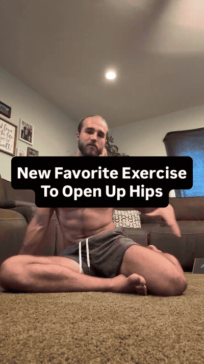
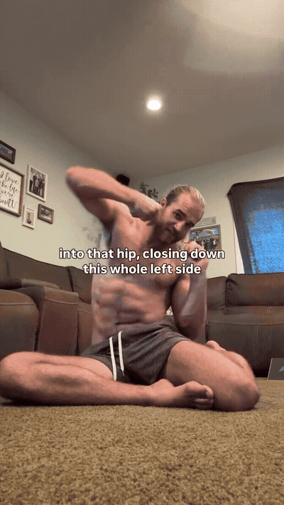
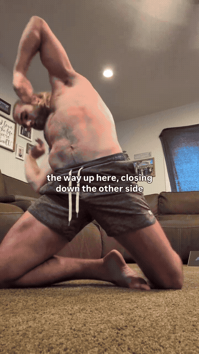
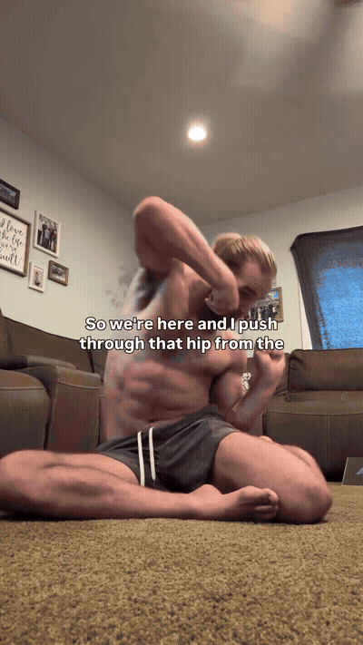
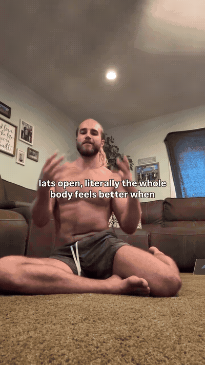

Lead leg bent ~90° in front, externally rotated; trail leg folded to the side, internally rotated. He calls this the pigeon position. Turn the toes of the lead foot (or the trailing foot) into the ground — you see my heel because my toes are pushing into the ground — so the hip has something to push against.

Drive the same-side elbow down into the hip/waist and close the whole side down: lateral crunch of the torso toward the trail-leg side. This is the closing down phase. His cue: actually create compression — get comfortable in the tight, closed position instead of rushing out of it.

From that compressed coil, push the toes through the hip and drive the hips up off the floor into a tall kneeling position, arching/extending the torso and reaching the opposite arm up and back. The whole closed side opens all the way up.

— thats 1 rep. Chain a few reps on that side, then mirror exactly on the other side.

— he stresses the final extension as the one that makes the whole body feel better.